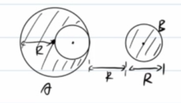
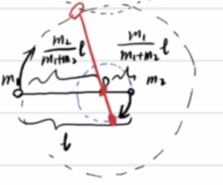
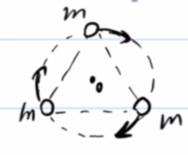
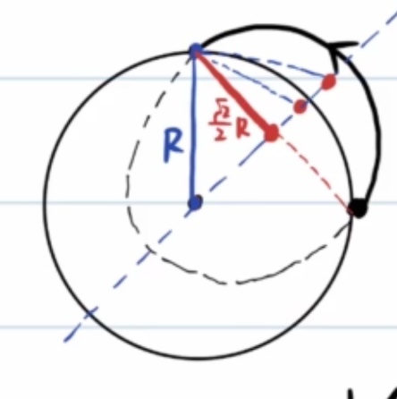

<meta data-alternate="https://freshmark.sunisalex.org/en/posts/physics/universal-law-of-graviation/" data-article="true" data-canonical="https://freshmark.sunisalex.org/posts/physics/universal-law-of-graviation/" data-description="万有引力定律全景:从开普勒三定律到三大宇宙速度,辅以球壳引力、双星三星、天体能量等专题与例题精解。" data-freshmark-page data-title="天体运动:万有引力定律 — Freshmark"><main><header class="container article-header"><a href="/" class="back-link">← 返回全部文章</a><p class="eyebrow article-subject">物理</p><h1>天体运动:万有引力定律</h1><p class="article-dek">万有引力定律全景:从开普勒三定律到三大宇宙速度,辅以球壳引力、双星三星、天体能量等专题与例题精解。</p><div class="article-meta"><time datetime="2026-06-07">2026年6月7日</time><span>4 分钟阅读</span><span>物理竞赛 · 微积分</span><span class="view-count" data-article-view-count hidden>本文访问量 <strong data-article-views></strong></span><a href="index.md" download>下载 Markdown</a><button type="button" class="article-share" data-share-article data-share-text="万有引力定律全景:从开普勒三定律到三大宇宙速度,辅以球壳引力、双星三星、天体能量等专题与例题精解。" data-share-title="天体运动:万有引力定律"><span data-share-label>分享文章</span></button><output aria-live="polite" class="visually-hidden" data-share-status role="status"></output></div></header><div class="article-wrap"><aside class="toc"><div class="toc-head"><p>本文目录</p><button type="button" class="toc-toggle" aria-expanded="false" aria-label="展开或收起目录" data-toc-toggle><span class="toc-toggle-label">目录</span><span class="toc-toggle-icon" aria-hidden="true"></span></button></div><nav aria-label="目录" class="toc-links" data-toc-links><a href="#历史" class="toc-level-2">历史</a><a href="#开普勒三定律" class="toc-level-2">开普勒三定律</a><a href="#开普勒第二定律" class="toc-level-3">开普勒第二定律</a><a href="#开普勒第三定律" class="toc-level-3">开普勒第三定律</a><a href="#一北极星视角" class="toc-level-2">一:北极星视角</a><a href="#二万有引力定律" class="toc-level-2">二:万有引力定律</a><a href="#质点和均匀球壳" class="toc-level-3">质点和均匀球壳</a><a href="#例1" class="toc-level-3">例1</a><a href="#例2" class="toc-level-3">例2</a><a href="#例3" class="toc-level-3">例3</a><a href="#例3-2" class="toc-level-3">例3'</a><a href="#例4" class="toc-level-3">例4</a><a href="#例54" class="toc-level-3">例5(4+)</a><a href="#例6" class="toc-level-3">例6</a><a href="#双星问题" class="toc-level-3">双星问题</a><a href="#三星问题" class="toc-level-3">三星问题</a><a href="#情况一" class="toc-level-4">情况一</a><a href="#情况二" class="toc-level-4">情况二</a><a href="#三天体能量" class="toc-level-2">三:天体能量</a><a href="#引力势能" class="toc-level-3">引力势能</a><a href="#证明" class="toc-level-4">证明</a><a href="#椭圆轨道总能量" class="toc-level-3">椭圆轨道总能量</a><a href="#四宇宙速度" class="toc-level-2">四:宇宙速度</a><a href="#第一宇宙速度" class="toc-level-3">第一宇宙速度</a><a href="#第二宇宙速度" class="toc-level-3">第二宇宙速度</a><a href="#第三宇宙速度" class="toc-level-3">第三宇宙速度</a><a href="#例7" class="toc-level-3">例7</a><a href="#写在最后" class="toc-level-2">写在最后</a></nav></aside><article class="prose"><!--more--><h2 id="历史">历史</h2><p>历史上,托勒密提出了<strong>地心说</strong>,认为地球是宇宙的中心.</p><p>后来,哥白尼通过天文观测等事实证据,提出了<strong>日心说</strong>(西方人往往认为哥白尼/伽利略等人是科学的鼻祖)</p><p>一般来讲,科学研究的一般过程是:</p><p><span class="math-expression math-display" data-math-source="\begin{gathered} \text{事实证据/观测}\longrightarrow \text{理论}\longrightarrow \text{实验} \end{gathered}" data-math-display></span></p><p>第谷为了证明<strong>地心说</strong>,进行了大量观测,并委任徒弟开普勒进行数学证明. 第谷死后,开普勒利用第谷的数据发现了<strong>开普勒三定律</strong>,这与第谷的本意 背道而驰</p><h2 id="开普勒三定律">开普勒三定律</h2><ul><li>第一定律(轨道定律):行星绕太阳运动的轨迹为椭圆,太阳在椭圆的一个焦点上</li><li>第二定律(面积定律):行星绕太阳单位时间扫过的面积相同</li><li>第三定律(周期定律):绕太阳运动的行星,若设其半长轴为<span class="math-expression math-inline" data-math-source="a"></span>,太阳质量为<span class="math-expression math-inline" data-math-source="M"></span>,则<span class="math-expression math-inline" data-math-source="\frac{a^3}{T^2}=\frac{GM}{4\pi^2}"></span></li></ul><h3 id="开普勒第二定律">开普勒第二定律</h3><p>开普勒第二定律本质上是有心力作用下<strong>角动量L守恒</strong>的体现:</p><p>由于万有引力是有心力,太阳/行星系统 所受的合外力力矩为零,所以有 <span class="math-expression math-display" data-math-source="\begin{gathered} L=\vec{r}\times\vec{p}=m\vec{r}\times\vec{v}=C\\ \delta=\frac{dS}{dt}=\frac{\frac{1}{2}rvdt\sin\theta}{dt}=\frac{1}{2}|\vec{r}\times\vec{v}|=\frac{1}{2}C \end{gathered}" data-math-display></span></p><p>结论:角动量守恒与开普勒第二定律等价(本质上&lt;-&gt;充要条件)</p><h3 id="开普勒第三定律">开普勒第三定律</h3><p>这里给出不严密的证明:</p><p>设椭圆轨道退化为圆,则半长轴退化为轨道半径</p><p><span class="math-expression math-display" data-math-source="\begin{gathered} \frac{GMm}{R^2}=m\frac{4\pi^2}{T^2}R\\ \frac{R^3}{T^2}=\frac{GM}{4\pi^2} \end{gathered}" data-math-display></span></p><h2 id="一北极星视角">一:北极星视角</h2><p><picture class="responsive-picture"><source srcset="image.freshmark-171bab54b3d9-480w.avif 480w, image.freshmark-171bab54b3d9-637w.avif 637w" type="image/avif"><source srcset="image.freshmark-171bab54b3d9-480w.webp 480w, image.freshmark-171bab54b3d9-637w.webp 637w" type="image/webp"></picture></p><p>从北极星看地球,地球逆时针<strong>自转</strong>,绕太阳逆时针<strong>公转</strong></p><p>在北半球的<strong>夏至日</strong>,地球反而在<strong>远日点</strong>;在北半球的<strong>冬至日</strong>,地球反而在<strong>近日点</strong>.</p><p>温度的差异主要来自于<strong>太阳高度角</strong></p><p>由开普勒第二定律,不难得出<span class="math-expression math-inline" data-math-source="S_{DAB}\lt S_{BCD},t_{DAB}\lt t_{BCD}"></span></p><h2 id="二万有引力定律">二:万有引力定律</h2><p>对于质量分别为<span class="math-expression math-inline" data-math-source="M,m"></span>的两质点: <span class="math-expression math-display" data-math-source="\boxed{F=\frac{GMm}{r^2}}" data-math-display></span> <span class="math-expression math-display" data-math-source="G=6.67\times 10^{-11}N\cdot m^2\cdot kg^{-2}" data-math-display></span> 其中<span class="math-expression math-inline" data-math-source="M,m"></span>质量定义可由惯性定义导出,也可有引力定义导出</p><p>非质点的情况如下图:</p><p><picture class="responsive-picture"><source srcset="image-1.freshmark-863d39846604-480w.avif 480w, image-1.freshmark-863d39846604-761w.avif 761w" type="image/avif"><source srcset="image-1.freshmark-863d39846604-480w.webp 480w, image-1.freshmark-863d39846604-761w.webp 761w" type="image/webp"></picture></p><h3 id="质点和均匀球壳">质点和均匀球壳</h3><p></p><p>设均匀球壳的面密度<span class="math-expression math-inline" data-math-source="\rho"></span>,我们考虑质元的配对:</p><p><span class="math-expression math-display" data-math-source="\begin{gathered} F_1=\frac{G\rho S_1m}{r_1^2}\\ F_2=\frac{G\rho S_2m}{r_2^2}\\ \frac{S_1}{S_2}=\frac{r_1^2}{r_2^2}\\ F_1=F_2 \end{gathered}" data-math-display></span></p><p>可见所有球壳微元对内部质点的引力合力为0.</p><h3 id="例1">例1</h3><p><picture class="responsive-picture"><source srcset="image-3.freshmark-59ad68401f19-368w.avif 368w" type="image/avif"><source srcset="image-3.freshmark-59ad68401f19-368w.webp 368w" type="image/webp"></picture></p><p>对于总质量为M,半径为R的均质球A,以半径R为直径切出一个小球B,放在大球右侧,使得B的圆心在被切除的半径所在直线上,两者最接近的两点距离为R,求A,B间的作用力</p><p>考虑补全A为一个假想球A':</p><p><span class="math-expression math-display" data-math-source="F=\frac{GM\frac{M}{8}}{(\frac{5}{2}R)^2}-\frac{G\frac{M}{8}\frac{M}{8}}{(2R)^2}" data-math-display></span></p><h3 id="例2">例2</h3><p>计算近地卫星,同步卫星,赤道上居民的运动参量:</p><p><span class="math-expression math-display" data-math-source="\begin{gathered} \frac{GMm}{R^2}=m\frac{4\pi^2}{T_{\text{近}}^2}R\\ T_{\text{近}}=84min \end{gathered}" data-math-display></span></p><p><span class="math-expression math-display" data-math-source="\begin{gathered} \frac{GMm}{R_{\text{同}}^2}=m\frac{4\pi^2}{T^2}R_{\text{同}}\\ R_{\text{同}}\approx 7R \end{gathered}" data-math-display></span></p><p>对于赤道上的居民,情况有所不同: <span class="math-expression math-display" data-math-source="\begin{gathered} \frac{GMm}{R^2}-N=m\frac{4\pi^2}{T^2}R\\ N=G=mg=\frac{GMm}{R^2}-m\frac{4\pi^2}{T^2}R \end{gathered}" data-math-display></span></p><p>从这一点上看,重力G是万有引力的分力.</p><p>体重秤从来不能反映人所受的万有引力(除非您是一头站在北极点的polar bear),体重秤显示的是<strong>视重N</strong></p><p>估算一下我在赤道上所受向心力的大小:</p><p><span class="math-expression math-display" data-math-source="\begin{gathered} F_n=m\frac{4\pi^2}{T^2}R\\=75\frac{4\pi^2}{(86400)^2}(6400\times10^3)\approx 2.5N \end{gathered}" data-math-display></span></p><p>相比于近似750N的重力,向心力微不足道.</p><p><picture class="responsive-picture"><source srcset="image-4.freshmark-5e670ba59b3e-480w.avif 480w, image-4.freshmark-5e670ba59b3e-486w.avif 486w" type="image/avif"><source srcset="image-4.freshmark-5e670ba59b3e-480w.webp 480w, image-4.freshmark-5e670ba59b3e-486w.webp 486w" type="image/webp"></picture></p><p>如果我不在赤道上,那么为了保持绕地轴做圆周运动,我还会受到地面的摩擦力f.</p><p>容易知道,纬度越高,视重越接近万有引力,重力加速度更大.</p><p>(<s>此处应该有弹簧秤侦探小故事?</s>)</p><hr><p>总之,如果忽略地球自转,有:</p><p><span class="math-expression math-display" data-math-source="\begin{gathered} \frac{GMm}{R^2}=mg\\ GM=gR^2 \end{gathered}" data-math-display></span></p><p>国外的教材称之为Golden Rule,中国人因此称之为黄金代换(<s>到底黄金在哪里呢?</s>)</p><h3 id="例3">例3</h3><p>设近地卫星周期为T,求地球的平均密度<span class="math-expression math-inline" data-math-source="\rho"></span></p><p><span class="math-expression math-display" data-math-source="\begin{gathered} \frac{GMm}{R^2}=m\frac{4\pi^2}{T^2}R\\ \frac{M}{R^3}=\frac{4\pi^2}{GT^2}=\frac{4}{3}\pi\rho\\ \rho=\frac{3\pi}{GT^2} \end{gathered}" data-math-display></span></p><h3 id="例3-2">例3'</h3><p>中子星脉冲的周期约为<span class="math-expression math-inline" data-math-source="T=\frac{1}{30}s"></span>,估算其密度 <span class="math-expression math-display" data-math-source="\rho=\frac{3\pi}{GT^2}\approx 1.3\times10^{15}kg/m^3" data-math-display></span></p><blockquote><p>本节由 Claude（Anthropic 开发的 AI 模型）补充，附在作者解答之后，并非原作者所写。</p></blockquote><p><strong>勘误（Claude 补充）</strong> 数值算错了一个数量级：<span class="math-expression math-inline" data-math-source="GT^2=6.67\times10^{-11}\times\dfrac{1}{900}\approx7.41\times10^{-14}"></span>，所以</p><p><span class="math-expression math-display" data-math-source="\rho=\frac{3\pi}{GT^2}\approx\frac{9.42}{7.41\times10^{-14}}\approx1.3\times10^{14}\ \text{kg/m}^3" data-math-display></span></p><p>严格说这是<strong>下限</strong>：星体表面物质要不被自转甩出，需满足 <span class="math-expression math-inline" data-math-source="\rho\ge\dfrac{3\pi}{GT^2}"></span>。</p><h3 id="例4">例4</h3><p>将一个质点从地表上方R处(R为地球半径)释放,求到达地面的时间<span class="math-expression math-inline" data-math-source="t"></span>.</p><p>不难看出,释放瞬间<span class="math-expression math-inline" data-math-source="a_0=\frac{1}{4}g"></span>,落地时<span class="math-expression math-inline" data-math-source="a_t=g"></span>,显然此时不能使用匀加速运动公式.</p><p>椭圆有两种退化的结果:</p><ul><li>圆(<span class="math-expression math-inline" data-math-source="e\to 0"></span>)</li><li>线段(<span class="math-expression math-inline" data-math-source="e\to 1"></span>)</li></ul><p></p><p>例4的情况相当于椭圆退化为线段(<span class="math-expression math-inline" data-math-source="e\to 1,a\to R"></span>),那么便可以运用开普勒第二/三定律求运动时间.</p><p>以下是我们所知的所有相关公式: <span class="math-expression math-display" data-math-source="\begin{gathered} \delta=\frac{dS}{dt}\\ T=\frac{S}{\delta}\\ S=\pi ab\\ \frac{T^2}{a^3}=\frac{4\pi^2}{GM} \end{gathered}" data-math-display></span></p><p>于是可以得到: <span class="math-expression math-display" data-math-source="\begin{gathered} T=\sqrt{\frac{4\pi^2R^3}{GM}}\\ \frac{t}{T}=\frac{S&#39;}{S}\\ S&#39;=\frac{1}{4}\pi ab+\frac{1}{2}ab,S=\pi ab\\ t=T\frac{\pi+2}{4\pi}=\frac{\pi+2}{4\pi}\sqrt{\frac{4\pi^2R^3}{GM}}\\ =\frac{\pi+2}{2}\sqrt{\frac{R^3}{GM}} \end{gathered}" data-math-display></span></p><h3 id="例54">例5(4+)</h3><p>两个质量分别为<span class="math-expression math-inline" data-math-source="m_1,m_2"></span>的质点,距离为<span class="math-expression math-inline" data-math-source="L"></span>,二者同时由静止释放,求二者相遇所用时间<span class="math-expression math-inline" data-math-source="t"></span>.</p><p>不难看出,系统所受合外力为0,二者质心静止不动,且二者相撞之处为质心.</p><p>法一:根据相对加速度,得出一个折合质量.</p><p>法二:等效法</p><p><picture class="responsive-picture"><source srcset="image-7.freshmark-b8863d839d86-480w.avif 480w, image-7.freshmark-b8863d839d86-576w.avif 576w" type="image/avif"><source srcset="image-7.freshmark-b8863d839d86-480w.webp 480w, image-7.freshmark-b8863d839d86-576w.webp 576w" type="image/webp"></picture></p><p>由质心定义:<span class="math-expression math-inline" data-math-source="m_1x_1=m_2x_2"></span>,其中<span class="math-expression math-inline" data-math-source="x_1,x_2"></span>为两质点到质心的距离.</p><p>记<span class="math-expression math-inline" data-math-source="F_{ab}"></span>是a受到b的力,则:</p><p><span class="math-expression math-display" data-math-source="\begin{gathered} F_{12}=\frac{Gm_1m_2}{(x_1+x_2)^2}=\frac{Gm_1m_2}{(x_1+\frac{m_1}{m_2}x_1)^2}\\ =\frac{G\frac{m_2^3}{(m_1+m_2)^2}m_1}{x_1^2} \end{gathered}" data-math-display></span></p><p>那么,<span class="math-expression math-inline" data-math-source="m_1"></span>所受<span class="math-expression math-inline" data-math-source="m_2"></span>的引力可以视为O点处质量为<span class="math-expression math-inline" data-math-source="\frac{m_2^3}{(m_1+m_2)^2}"></span>的质点对<span class="math-expression math-inline" data-math-source="m_1"></span>的引力.</p><p>于是,例5转化为了例4的closed case.</p><p><span class="math-expression math-inline" data-math-source="m_1"></span>初始到质心的距离<span class="math-expression math-inline" data-math-source="d_1=\frac{m_2}{m_1+m_2}L"></span></p><p>由开普勒第二/三定律 <span class="math-expression math-display" data-math-source="\begin{gathered} \frac{(\frac{d_1}{2})^3}{T^2}=\frac{GM}{4\pi^2}\\ T=\sqrt{\frac{4\pi^2(\frac{d_1}{2})^3}{GM}}=\pi\sqrt{\frac{d_1^3}{2GM}}\\ t=\frac{1}{2}T=\pi \sqrt{\frac{(\frac{m_2}{m_1+m_2}L)^3}{8G(\frac{m_2^3}{(m_1+m_2)^2})}}\\ =\pi\sqrt{\frac{L^3}{8G(m_1+m_2)}} \end{gathered}" data-math-display></span></p><h3 id="例6">例6</h3><p><picture class="responsive-picture"><source srcset="Screenshot_20260607-174330_%E4%BD%9C%E4%B8%9A%E5%B8%AE.freshmark-bcb88e5bac49-480w.avif 480w, Screenshot_20260607-174330_%E4%BD%9C%E4%B8%9A%E5%B8%AE.freshmark-bcb88e5bac49-960w.avif 960w, Screenshot_20260607-174330_%E4%BD%9C%E4%B8%9A%E5%B8%AE.freshmark-bcb88e5bac49-1264w.avif 1264w" type="image/avif"><source srcset="Screenshot_20260607-174330_%E4%BD%9C%E4%B8%9A%E5%B8%AE.freshmark-bcb88e5bac49-480w.webp 480w, Screenshot_20260607-174330_%E4%BD%9C%E4%B8%9A%E5%B8%AE.freshmark-bcb88e5bac49-960w.webp 960w, Screenshot_20260607-174330_%E4%BD%9C%E4%B8%9A%E5%B8%AE.freshmark-bcb88e5bac49-1264w.webp 1264w" type="image/webp"></picture>半椭圆轨道的半长轴<span class="math-expression math-inline" data-math-source="a=\frac{R_m+R_0}{2}=1.25R_0"></span></p><p></p><p>稍加分析,可知探测器与火星间的角距离<span class="math-expression math-inline" data-math-source="\alpha"></span>不断缩小.</p><p>那么,我们只需要让火星运行<span class="math-expression math-inline" data-math-source="\pi-\alpha"></span>角度和探测器运动<span class="math-expression math-inline" data-math-source="\pi"></span>角度的时间相同即可.</p><p>为了叙述方便,把地球,火星,探测器分别称为(e)arth,(m)ars,(r)over <span class="math-expression math-display" data-math-source="\begin{gathered} T_e=365 day\\ T_m=T_e\sqrt{1.5^3}=671 day\\ T_r=T_e\sqrt{1.25^3}=510 day\\ \frac{1}{2}T_r=255 day\\ \frac{\pi-\alpha}{2\pi}T_m=\frac{1}{2}T_r\\ \alpha=\frac{161}{671}\pi\\ \frac{\pi}{3}-\alpha=(\frac{2\pi}{T_e}-\frac{2\pi}{T_m})t\\ t\approx 37day \end{gathered}" data-math-display></span></p><p>3月1日零时往后推30天为3月31日零时,后推37天则是4月7日零时.</p><p>故<strong>4月7日点火</strong>.</p><h3 id="双星问题">双星问题</h3><p>设两个质量均为<span class="math-expression math-inline" data-math-source="m"></span>的质点之间的运动达到稳定,二者距离为<span class="math-expression math-inline" data-math-source="l"></span>,系统合外力为0,动量守恒,质心不动.</p><p><span class="math-expression math-display" data-math-source="\begin{gathered} G\frac{mm}{l^2}=m\frac{4\pi^2}{T^2}\frac{l}{2}\\ T=2\pi\sqrt{\frac{l^3}{G(2m)}} \end{gathered}" data-math-display></span></p><p><picture class="responsive-picture"><source srcset="image-9.freshmark-ed9a3c12693e-372w.avif 372w" type="image/avif"><source srcset="image-9.freshmark-ed9a3c12693e-372w.webp 372w" type="image/webp"></picture></p><p>一般地,若两质点质量分别为<span class="math-expression math-inline" data-math-source="m_1,m_2"></span>,则质心到<span class="math-expression math-inline" data-math-source="m_1"></span>距离为<span class="math-expression math-inline" data-math-source="\frac{m_2}{m_1+m_2}l"></span></p><p><span class="math-expression math-display" data-math-source="\begin{gathered} G\frac{m_1m_2}{l^2}=m_1\frac{4\pi^2}{T^2}\frac{m_2}{m_1+m_2}l\\ T=2\pi\sqrt{\frac{l^3}{G(m_1+m_2)}} \end{gathered}" data-math-display></span></p><h3 id="三星问题">三星问题</h3><h4 id="情况一">情况一</h4><p><picture class="responsive-picture"><source srcset="image-10.freshmark-3471f92aaca9-392w.avif 392w" type="image/avif"><source srcset="image-10.freshmark-3471f92aaca9-392w.webp 392w" type="image/webp"></picture></p><p><span class="math-expression math-display" data-math-source="\frac{Gmm}{r^2}+\frac{Gmm}{(2r)^2}=m\frac{4\pi^2}{T^2}r" data-math-display></span></p><h4 id="情况二">情况二</h4><p><picture class="responsive-picture"><source srcset="image-11.freshmark-020cb4148aa5-380w.avif 380w" type="image/avif"><source srcset="image-11.freshmark-020cb4148aa5-380w.webp 380w" type="image/webp"></picture></p><p><span class="math-expression math-display" data-math-source="2\frac{\sqrt{3}}{2}\frac{Gmm}{(\sqrt{3}r)^2}=m\frac{4\pi^2}{T^2}r" data-math-display></span></p><h2 id="三天体能量">三:天体能量</h2><h3 id="引力势能">引力势能</h3><p>设无穷远处为势能零点,则质量为<span class="math-expression math-inline" data-math-source="M,m"></span>的质点之间引力势能为:</p><p><span class="math-expression math-display" data-math-source="\boxed{E=-\frac{GMm}{r}=-W}" data-math-display></span></p><p>其中,<span class="math-expression math-inline" data-math-source="W"></span>是<span class="math-expression math-inline" data-math-source="m"></span>从无穷远点运动到<span class="math-expression math-inline" data-math-source="r"></span>处引力做的功.</p><h4 id="证明">证明</h4><p><span class="math-expression math-display" data-math-source="\begin{gathered} W=\int_{\infty}^{r}\frac{GMm}{r^2}dr=\frac{GMm}{r} \end{gathered}" data-math-display></span></p><p>这是一个典型的<strong>反常积分</strong></p><p>或者考虑微元法累加:</p><p><span class="math-expression math-display" data-math-source="\begin{gathered} \Delta W_1=\frac{GMm}{r_1r_2}(r_2-r_1)=GMm(\frac{1}{r_1}-\frac{1}{r_2})\\ \Delta W_2=\frac{GMm}{r_2r_3}(r_3-r_2)=GMm(\frac{1}{r_2}-\frac{1}{r_3})\\ ...\\ \sum \Delta W=GMm(\frac{1}{r_1}-\frac{1}{r_n})\\ =\int_{\infty}^{r}\frac{GMm}{r^2}dr=\frac{GMm}{r} (r_1\to \infty,r_n=r) \end{gathered}" data-math-display></span></p><blockquote><p>本节由 Claude（Anthropic 开发的 AI 模型）补充，附在作者解答之后，并非原作者所写。</p></blockquote><p><strong>更正（Claude 补充）</strong> 两种写法里的符号都有疏漏。引力指向 <span class="math-expression math-inline" data-math-source="-\hat r"></span>，径向分量是 <span class="math-expression math-inline" data-math-source="-\dfrac{GMm}{r^2}"></span>，所以</p><p><span class="math-expression math-display" data-math-source="W=\int_{\infty}^{r}\left(-\frac{GMm}{r&#39;^2}\right)dr&#39;=\frac{GMm}{r}" data-math-display></span></p><p>原式 <span class="math-expression math-inline" data-math-source="\int_\infty^r\frac{GMm}{r^2}dr"></span>&#32;实际等于 <span class="math-expression math-inline" data-math-source="-\dfrac{GMm}{r}"></span>。微元法中，从 <span class="math-expression math-inline" data-math-source="r_1"></span>&#32;移到 <span class="math-expression math-inline" data-math-source="r_2"></span>（<span class="math-expression math-inline" data-math-source="r_1&gt;r_2"></span>）时位移大小为 <span class="math-expression math-inline" data-math-source="r_1-r_2"></span>，所以应为 <span class="math-expression math-inline" data-math-source="\Delta W_1=GMm\left(\dfrac1{r_2}-\dfrac1{r_1}\right)&gt;0"></span>。累加得 <span class="math-expression math-inline" data-math-source="GMm\left(\dfrac1{r_n}-\dfrac1{r_1}\right)\to\dfrac{GMm}{r}"></span>，与结论 <span class="math-expression math-inline" data-math-source="E_p=-W=-\dfrac{GMm}{r}"></span>&#32;一致。</p><h3 id="椭圆轨道总能量">椭圆轨道总能量</h3><p>证明:椭圆轨道的总能量</p><p><span class="math-expression math-display" data-math-source="\boxed{E=E_k+E_p=-\frac{GMm}{2a}}" data-math-display></span></p><p>根据机械能守恒,只要算出轨道上任意一点的机械能即可.</p><p><picture class="responsive-picture"><source srcset="image-12.freshmark-b4408588884a-341w.avif 341w" type="image/avif"><source srcset="image-12.freshmark-b4408588884a-341w.webp 341w" type="image/webp"></picture></p><p>设近日点(n)ear速度为<span class="math-expression math-inline" data-math-source="v_n"></span>,远日点(f)ar速度为<span class="math-expression math-inline" data-math-source="v_f"></span>.</p><p><span class="math-expression math-display" data-math-source="\begin{gathered} E=\frac{1}{2}mv_n^2+(-\frac{GMm}{a-c})\\ =\frac{1}{2}mv_f^2+(-\frac{GMm}{a+c})\\ L=mv_n(a-c)=mv_f(a+c)\\ \Longrightarrow \frac{1}{2}mv_f^2(\frac{a+c}{a-c})^2+(-\frac{GMm}{a-c})=\frac{1}{2}mv_f^2+(-\frac{GMm}{a+c})\\ \Longrightarrow \begin{cases} v_f^2=GM(\frac{a-c}{a+c})\frac{1}{a},\\ v_n^2=GM(\frac{a+c}{a-c})\frac{1}{a} \end{cases}\\ E=\frac{1}{2}mGM(\frac{a+c}{a-c})\frac{1}{a}+(-\frac{GMm}{a+c})\\ =-\frac{GMm}{2a} \end{gathered}" data-math-display></span></p><p>显然,在各种圆锥曲线中,椭圆(闭合曲线)的能量最小,不闭合的曲线能量更大.</p><ul><li>椭圆:<span class="math-expression math-inline" data-math-source="E\lt0"></span></li><li>抛物线:<span class="math-expression math-inline" data-math-source="E=0"></span></li><li>双曲线:<span class="math-expression math-inline" data-math-source="E=\frac{GMm}{2a}\gt0"></span></li></ul><h2 id="四宇宙速度">四:宇宙速度</h2><p><strong>宇宙速度</strong>:从地球表面发射卫星为<strong>达到不同效果</strong>而需要的<strong>不同初速度</strong></p><h3 id="第一宇宙速度">第一宇宙速度</h3><p><span class="math-expression math-inline" data-math-source="v_1"></span>=7.9km/s,又称<strong>环绕速度</strong></p><p><span class="math-expression math-display" data-math-source="\frac{GMm}{R^2}=m\frac{v_1^2}{R},v_1=\sqrt{gr}" data-math-display></span></p><h3 id="第二宇宙速度">第二宇宙速度</h3><p><span class="math-expression math-inline" data-math-source="v_2=11.2km/s"></span>,又称<strong>脱离速度</strong></p><p><span class="math-expression math-display" data-math-source="E=\frac{1}{2}mv_2^2+(-\frac{GMm}{R})=0,v_2=\sqrt{2gr}=\sqrt{2}v_1" data-math-display></span></p><h3 id="第三宇宙速度">第三宇宙速度</h3><p><span class="math-expression math-inline" data-math-source="v_3=16.7km/s"></span>,又称<strong>逃逸速度</strong></p><p>相对于太阳离开到无穷远(先离开地球,再离开太阳)</p><p>第一步的机械能守恒以地球(e)arth为系,第二步以太阳(s)un为系.</p><p><span class="math-expression math-display" data-math-source="\begin{gathered} \frac{1}{2}mv_3^2-\frac{GM_em}{R}=\frac{1}{2}mv_3&#39;^2\\ \frac{1}{2}m(v_3&#39;+v_e)^2+(-\frac{GM_sm}{R_s})=0 \end{gathered}" data-math-display></span></p><h3 id="例7">例7</h3><p>不计地球自转,从赤道上发射一颗导弹,使之能击中北极点,求最小发射速度.</p><p>已知:<span class="math-expression math-inline" data-math-source="G"></span>,地球半径<span class="math-expression math-inline" data-math-source="R"></span>,地球质量<span class="math-expression math-inline" data-math-source="M"></span></p><p><span class="math-expression math-display" data-math-source="\begin{gathered} E=(-\frac{GMm}{R})+\frac{1}{2}mv_0^2\\ v_{min}\leftarrow E_{min}\leftarrow \frac{-GMm}{2a}\leftarrow a_{min}\\ \end{gathered}" data-math-display></span></p><p><picture class="responsive-picture"><source srcset="image-13.freshmark-f88eabe4cf32-444w.avif 444w" type="image/avif"><source srcset="image-13.freshmark-f88eabe4cf32-444w.webp 444w" type="image/webp"></picture></p><p>由椭圆的第一定义,<span class="math-expression math-inline" data-math-source="2a_{min}=(1+\frac{\sqrt{2}}{2})R"></span></p><p><span class="math-expression math-display" data-math-source="\begin{gathered} E=(-\frac{GMm}{R})+\frac{1}{2}mv_{min}^2=-\frac{GMm}{(1+\frac{\sqrt{2}}{2})R} \end{gathered}" data-math-display></span></p><p>于是不难看出:</p><ul><li>近地导弹不是初速度最小的方案</li><li>如果初速度小于<span class="math-expression math-inline" data-math-source="v_1"></span>,则<span class="math-expression math-inline" data-math-source="2a\lt R"></span>,椭圆轨道必定与地球相交</li></ul><blockquote><p>本节由 Claude（Anthropic 开发的 AI 模型）补充，附在作者解答之后，并非原作者所写。</p></blockquote><p><strong>补充与更正（Claude 补充）</strong> 把最小速度算到底：</p><p><span class="math-expression math-display" data-math-source="\frac12v_{\min}^2=\frac{GM}{R}\left(1-\frac{1}{1+\frac{\sqrt2}{2}}\right)=\frac{GM}{R}\cdot\frac{\sqrt2}{2+\sqrt2}=(\sqrt2-1)\frac{GM}{R}" data-math-display></span></p><p><span class="math-expression math-display" data-math-source="v_{\min}=\sqrt{\frac{2(\sqrt2-1)GM}{R}}\approx0.910\,v_1\approx7.2\ \text{km/s}" data-math-display></span></p><p>此时另一焦点在弦的中点，发射方向与当地水平面成 <span class="math-expression math-inline" data-math-source="22.5^\circ"></span>&#32;仰角（速度沿椭圆切线，切线平分两条焦半径所成的外角）。</p><p>第二条结论应改为：<span class="math-expression math-inline" data-math-source="v&lt;v_1"></span>&#32;时 <span class="math-expression math-inline" data-math-source="E&lt;-\dfrac{GMm}{2R}"></span>，得到的是 <span class="math-expression math-inline" data-math-source="a&lt;R"></span>（不是 <span class="math-expression math-inline" data-math-source="2a&lt;R"></span>）。本题 <span class="math-expression math-inline" data-math-source="a_{\min}=\dfrac{2+\sqrt2}{4}R\approx0.854R&lt;R"></span>，所以最优轨道恰好对应小于 <span class="math-expression math-inline" data-math-source="v_1"></span>&#32;的发射速度。</p><h2 id="写在最后">写在最后</h2><p>回头看看,这一路从第谷的执拗、开普勒的&quot;背叛&quot;,走到了三大宇宙速度.</p><p>如果要把整篇浓缩成几句话:</p><ul><li><strong>开普勒第二定律</strong> 的本质是角动量守恒,<strong>第三定律</strong> 则在圆轨道近似下一眼可证;</li><li>均匀球壳对内部质点引力为零,对外部则等效于质心处的一个质点——这是处理一切球体引力的钥匙;</li><li>重力只是万有引力的一个分力,体重秤量的从来是 <strong>视重</strong>(除非您真是北极点上那头 polar bear);</li><li><strong>黄金代换</strong> <span class="math-expression math-inline" data-math-source="GM=gR^2"></span>&#32;几乎贯穿所有估算,虽然黄金到底在哪还是个谜;</li><li>椭圆轨道总能量 <span class="math-expression math-inline" data-math-source="E=-\frac{GMm}{2a}"></span>&#32;只和半长轴有关,于是椭圆退化成线段时,自由落体、双星相遇这类&quot;看似不能用匀加速&quot;的问题,都能被开普勒定律一网打尽;</li><li>三大宇宙速度 <span class="math-expression math-inline" data-math-source="v_1:v_2:v_3=7.9:11.2:16.7"></span>,分别对应环绕、脱离、逃逸——而最小发射速度的方案,往往不是你以为的那条近地轨道.</li></ul><p>万有引力把苹果和行星写进了同一个公式里.下次抬头看见远日点的夏天,大概就能会心一笑了.</p></article></div><section class="container comments" data-comments data-comments-path="/posts/physics/universal-law-of-graviation/"><div class="comments-head"><div><p class="eyebrow">评论</p><h2 data-comments-title>评论</h2></div><p>登录后参与讨论。注册时只需验证一次邮箱。</p></div><div class="comment-list" aria-live="polite" data-comment-list><p class="comment-state" data-comment-state>正在加载评论…</p></div><button type="button" class="comment-more" data-comments-more hidden>加载更早的评论</button><div class="comment-auth" data-comment-auth><p class="comment-auth-status" data-auth-loading>正在检查登录状态…</p><div hidden data-auth-guest><form class="comment-auth-form" data-auth-login><h3>登录后评论</h3><label>邮箱<input autocomplete="email" name="email" maxlength="254" required type="email"></label><label>密码<input autocomplete="current-password" name="password" maxlength="128" required type="password"></label><div class="comment-form-foot"><p class="comment-form-status" role="status" data-auth-login-status></p><button type="submit">登录</button></div></form><details class="comment-register"><summary>还没有账号？注册</summary><form class="comment-auth-form" data-auth-register><label>昵称<input autocomplete="name" name="name" maxlength="40" required></label><label>邮箱<input autocomplete="email" name="email" maxlength="254" required type="email"></label><label>密码<input autocomplete="new-password" name="password" maxlength="128" required type="password" minlength="8"></label><p class="comment-auth-hint">至少 8 个字符。</p><div class="comment-form-foot"><p class="comment-form-status" role="status" data-auth-register-status></p><button type="submit">注册</button></div></form></details></div><form class="comment-auth-form" hidden data-auth-verify><p>验证码已发送到邮箱，请在 10 分钟内完成注册。</p><label>六位验证码<input autocomplete="one-time-code" name="code" maxlength="6" required minlength="6" inputmode="numeric" pattern="[0-9]{6}"></label><div class="comment-form-foot"><p class="comment-form-status" role="status" data-auth-verify-status></p><button type="submit">完成注册</button></div></form><div class="comment-auth-user" data-auth-user hidden><p>当前登录： <strong data-auth-user-name></strong> <span data-auth-user-email></span></p><button type="button" data-auth-logout>退出登录</button></div></div><form class="comment-form" hidden data-comment-form><label>评论内容<textarea maxlength="2000" minlength="2" name="body" placeholder="写下你的想法…" required rows="5"></textarea></label><p class="comment-markdown-hint">支持 Markdown：加粗、链接、引用、列表和代码。</p><label aria-hidden="true" class="comment-honeypot">Website<input autocomplete="off" name="website" tabindex="-1"></label><div class="comment-form-foot"><p class="comment-form-status" role="status" data-comment-form-status></p><button type="submit" data-comment-submit>发表评论</button></div></form></section></main>